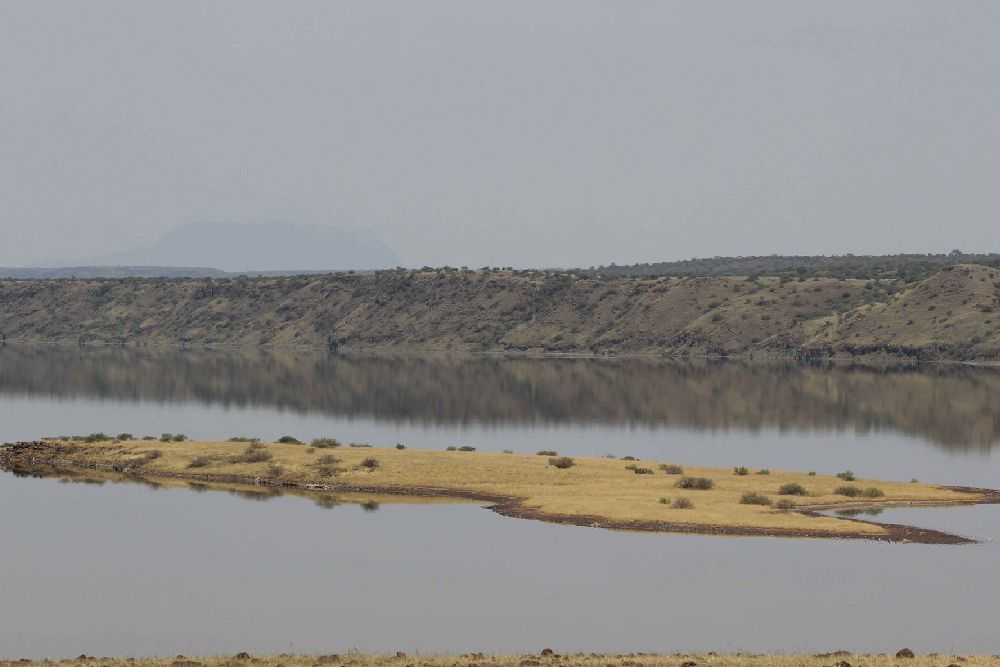
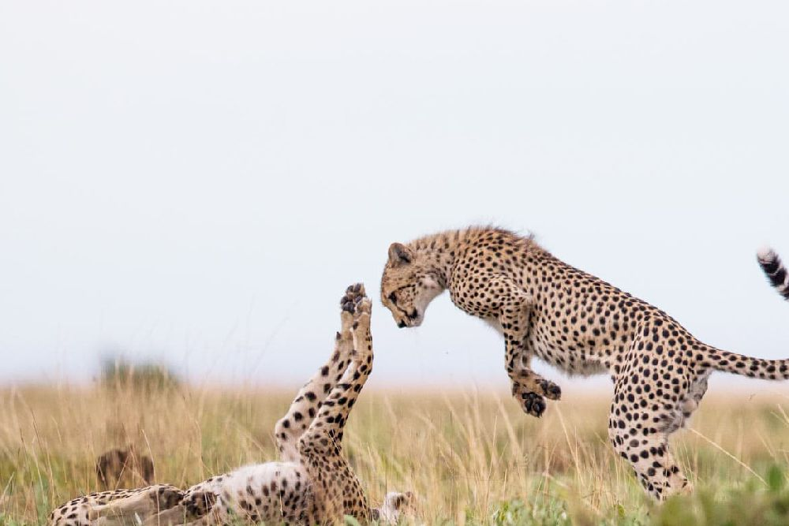
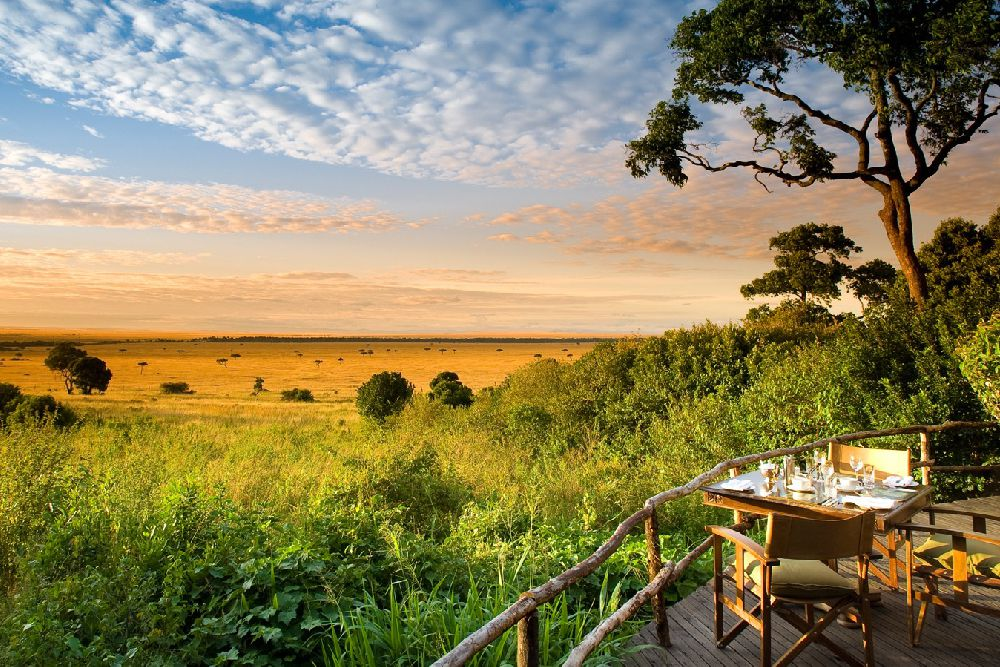
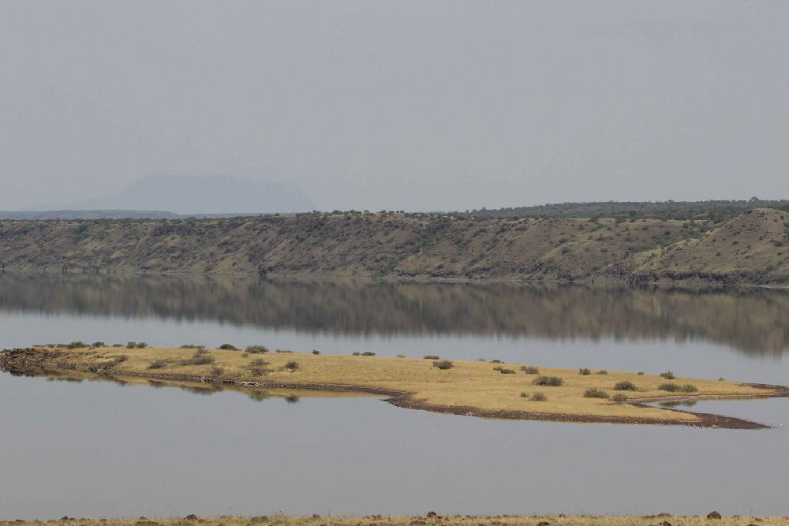
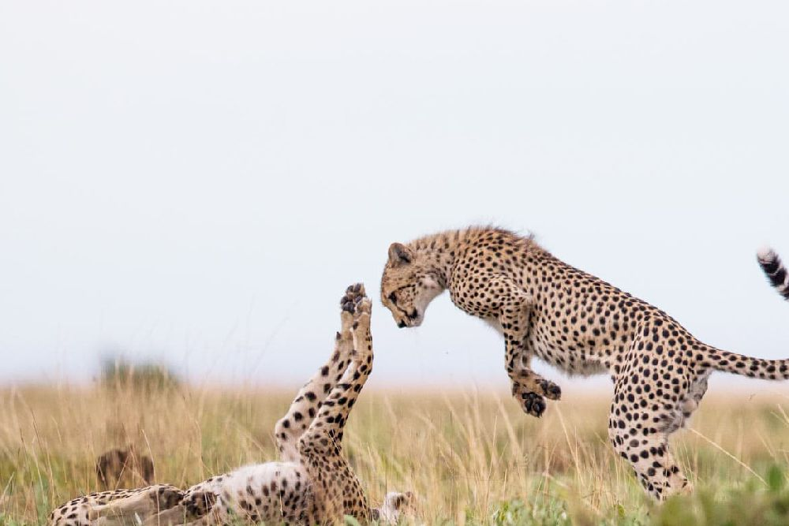
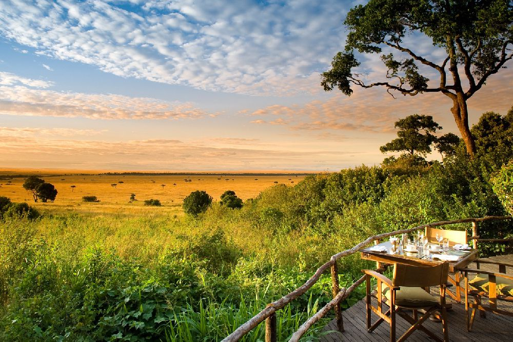

- Home
- Safaris Tours
- Bush and Lake Safari 7 Days & 6 Nights Tour


 





Bush and Lake Safari 7 Days & 6 Nights
Maasai Mara National Reserve is one of the most famous game reserves in the world, known for its native populations of antelopes, gazelles, giraffes, and more. Make the most of your trip to the reserve on this 3-day budget tour, which includes multiple game drives for the greatest chance of spotting wildlife. See Mount Longonot National Park and Mara River, and enjoy the convenience of having meals, transport, and safari tent accommodation included
DETAILED ITINERARY
Day 1: Nairobi- Amboseli National Park
An early morning start and drive to Amboseli National Park. Check-in at accommodation and lunch. Afternoon game drive. Amboseli National Park is situated due south of Nairobi, Most of the park consists of a dry, ancient lake bed and fragile grassland with patches of acacia woodland, while in the southern area there is a number of small, rocky, volcanic hills. Around the swamps Ol Okenya, Ol Tukai and Enkongo Narok, the vegetation is lush with yellow barked acacias and phoenix palms. Dinner and overnight at campsite or lodge.
Day 2: Amboseli National Park
Rising early for good views of Mount Kilimanjaro before clouds build up over the summit with packed lunch provided, an optional visit to a Masai village can be planned after breakfast. A visit reveals the singing and dancing that are part of their daily lives and sacred rituals. A glimpse into their homes and social structure is a poignant experience. Despite its changing habitat, Amboseli National Park is possibly the best wildlife area in the whole of Africa to experience elephant at close range. Left unharassed by poachers, elephants feeding and bathing in the swamps must form the highlights of any Safari. Dinner and overnight at campsite or lodge.
Day 3: Amboseli National Park- Lake Nakuru National Park
Early morning pick up, then drive to Lake Nakuru National Park. Known all over the world for its flamingoes, it's alkaline and is recognized as being one of the natural wonders of the world. Lake Nakuru is now a rhino sanctuary, harbouring a population of over 40 black and over 60 white rhinos, but the flamingoes, of course, have always been the main attraction. At times there may be almost 2 million flamingoes in the residence, forming a stunningly beautiful deep pink band around the edge of the lakeshore. Arrive in time for lunch then have an afternoon game drive. Dinner and overnight at campsite or lodge.
Day 4: Lake Nakuru National Park- Lake Naivasha National Park
An early morning drive to Lake Naivasha, it is the highest and the most beautiful of the Rif Valley lakes. At 1910m (6200f), the water is fresh and the lake is fringed with dense clumps of papyrus (ancient Egyptian once used this to make paper). Kingfishers use the papyrus as a perch, herons hide in it while searching for food. Naivasha is yet another area popular for bird watching (over 400species have been recorded). It is also a favorite weekend retreat for Nairobi residents, who come here to sail, water ski and fish. There are no crocodiles in the lake as the water is too cold for them, due to altitude but there are a number of hippos. Along the lakeshore, vineyards produce grapes for the country's fledgeling wine industry. Dinner and overnight at campsite or lodge.
A boat ride in Lake Naivasha is optional.
Day 5: Lake Naivasha National Park- Maasai Mara National Reserve
Depart early morning to Maasai Mara National Reserve, it holds on as one of the few places left on earth where wildlife still lives comparatively undisturbed, in the numbers that once roamed the plains and forests of Africa. As the northern tip of the vast Serengeti ecosystem, the Mara hosts the spectacular seasonal migration of many thousands of Wildebeest, Zebras and attendant predators. Arrive in time for lunch then have an afternoon game drive. Dinner and overnight at campsite or lodge.
Day 6: Maasai Mara
After breakfast, we have a full day dame drive, with packed lunch provided. The reserve is well known for its black-manned lion, as well as its abundant resident wildlife and its one of the few places where it's possible to see the big five during a morning's game drive. Many of the cheetahs are so tame they seek shelter from the hot sun under one's vehicle and several even climb onto the roof to get a better view of prospective prey. For the bird enthusiast, almost 500 species have been recorded: among these 16 species of eagle, plus many hawks and falcons, 6 species of vultures, 8 species of storks 4 of bustard (including the Kori bustard, the world's heaviest flying bird), and 9 species of sunbirds. Dinner and overnight at campsite or lodge.
Day 7: Maasai Mara National Reserve- Nairobi
Morning game drive in Mara and afternoon transfer to Nairobi arriving at about 5 pm. Lunch en route.
End of services.